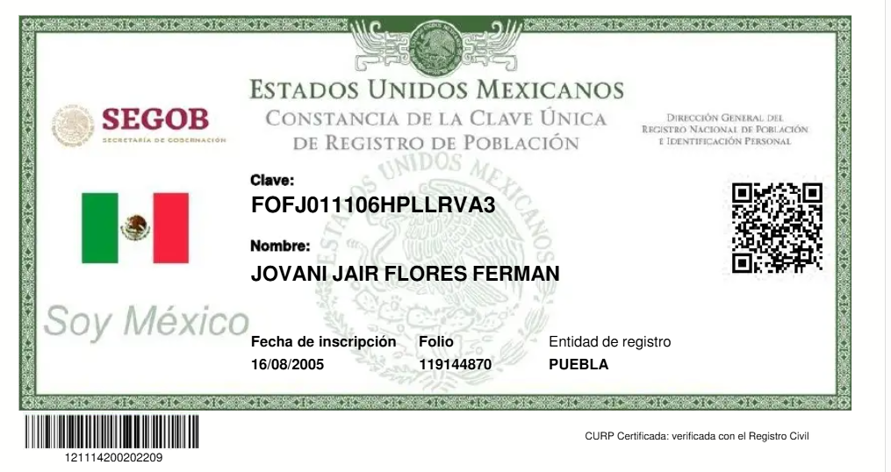
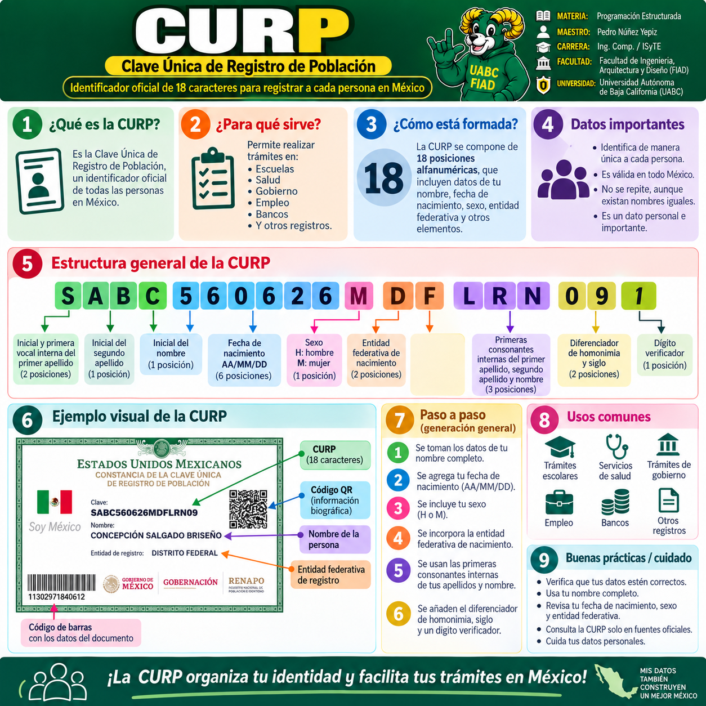
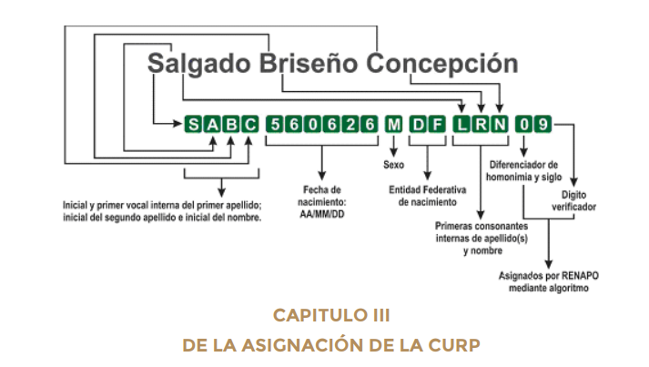
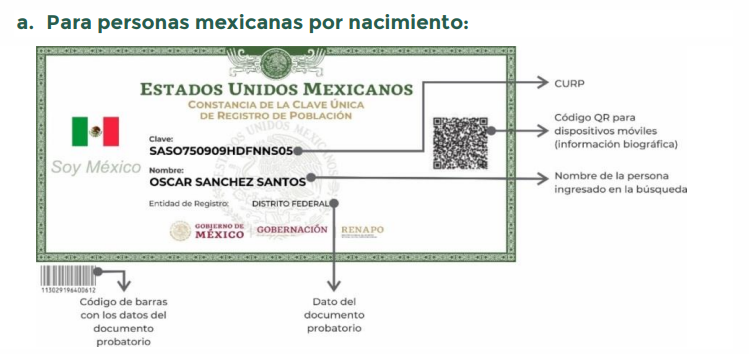

¿Qué es?
Es la Clave Única de Registro de Población. El instructivo normativo la define como una secuencia alfanumérica de 18 caracteres asignada a las personas físicas domiciliadas en territorio nacional y a nacionales en el extranjero.
Clave Única de Registro de Población
La CURP es una clave alfanumérica de 18 caracteres que permite registrar e identificar de manera individual a las personas. Esta página reúne los elementos más importantes para que el alumno comprenda su estructura y pueda desarrollar un programa que genere, analice o valide una CURP con fines didácticos.

Es la Clave Única de Registro de Población. El instructivo normativo la define como una secuencia alfanumérica de 18 caracteres asignada a las personas físicas domiciliadas en territorio nacional y a nacionales en el extranjero.
Permite identificar de forma individual a cada persona en trámites de escuela, salud, empleo, gobierno, bancos y otros registros.
Porque es un dato de identidad ampliamente usado por sistemas informáticos y bases de datos. Ayuda a evitar duplicidades y a enlazar registros personales.
La CURP no es totalmente libre: usa reglas sobre nombres, fecha, sexo, entidad federativa, consonantes internas y un dígito verificador.
Se construye con datos personales básicos y una parte final de control.

Infografía general de apoyo para comprender la CURP.
AAMMDD.H o M).

Nombre: Salgado Briseño Concepción
Si el nombre inicia con María o José y existe un segundo nombre, normalmente se toma la inicial del siguiente nombre significativo.
Ejemplo: María Fernanda → se usa F.
Cuando una persona no tiene segundo apellido, el sistema puede utilizar X como carácter de sustitución en la posición correspondiente.
Si no existe una vocal interna o consonante interna útil, se utiliza X.
En apellidos y nombres compuestos se suelen omitir partículas como DE, DEL, LA, LAS, LOS, Y, MC, MAC, VAN, VON, entre otras, para localizar la parte significativa.
Si los primeros cuatro caracteres forman una palabra ofensiva o inconveniente, RENAPO aplica una sustitución (frecuentemente la segunda letra cambia por X).
Para programar, conviene normalizar a mayúsculas, quitar acentos y considerar el tratamiento especial de caracteres no válidos o particulares.
Se registra la fecha de nacimiento como AAMMDD.
Es importante validar año, mes, día y casos especiales como años bisiestos.
Se usa la letra del sexo:
Corresponden al código de la entidad federativa de nacimiento. Para un programa, es recomendable guardar estos códigos en un arreglo, tabla o diccionario.
| Código | Entidad | Código | Entidad | Código | Entidad |
|---|---|---|---|---|---|
| AS | Aguascalientes | BC | Baja California | BS | Baja California Sur |
| CC | Campeche | CL | Coahuila | CM | Colima |
| CS | Chiapas | CH | Chihuahua | DF | Ciudad de México / histórico DF |
| DG | Durango | GT | Guanajuato | GR | Guerrero |
| HG | Hidalgo | JC | Jalisco | MC | Estado de México |
| MN | Michoacán | MS | Morelos | NT | Nayarit |
| NL | Nuevo León | OC | Oaxaca | PL | Puebla |
| QT | Querétaro | QR | Quintana Roo | SP | San Luis Potosí |
| SL | Sinaloa | SR | Sonora | TC | Tabasco |
| TS | Tamaulipas | TL | Tlaxcala | VZ | Veracruz |
| YN | Yucatán | ZS | Zacatecas | NE | Nacido en el extranjero |
Se forman con la primera consonante interna del primer apellido, del segundo apellido y del nombre. Si no existe consonante útil, se usa X.
Funciona como diferenciador de homonimia y siglo. Esta parte depende de reglas administrativas del sistema y no siempre se deduce solo con los datos personales.
Es el dígito verificador. Se calcula matemáticamente a partir de los primeros 17 caracteres y ayuda a validar la consistencia de la clave.
// Tabla de equivalencias para CURP
// 0-9 => 0-9, A=>10, B=>11, ..., N=>23, Ñ=>24, O=>25, ..., Z=>36
int valorCurp(char c) {
const char *tabla = "0123456789ABCDEFGHIJKLMNÑOPQRSTUVWXYZ";
for (int i = 0; tabla[i] != '�'; i++) {
if (tabla[i] == c) return i;
}
return 0;
}
int digitoVerificador(const char curp17[]) {
int suma = 0;
for (int i = 0; i < 17; i++) {
int valor = valorCurp(curp17[i]);
int peso = 18 - (i + 1); // 17, 16, 15, ..., 1
suma += valor * peso;
}
int residuo = suma % 10;
return (10 - residuo) % 10;
}Muy útil para convertir esta teoría en una práctica de programación.
Leer nombre, apellidoPaterno, apellidoMaterno, fechaNacimiento, sexo, entidad
Normalizar datos:
- convertir a mayúsculas
- quitar acentos
- eliminar artículos o partículas si es necesario
Generar posiciones 1 a 4:
1 = inicial del apellido paterno
2 = primera vocal interna del apellido paterno
3 = inicial del apellido materno o X si no existe
4 = inicial del nombre (considerar reglas de María/José)
Generar posiciones 5 a 10:
fecha en formato AAMMDD
Generar posición 11:
sexo (H o M)
Generar posiciones 12 y 13:
buscar código de la entidad federativa
Generar posiciones 14 a 16:
primera consonante interna de apellido paterno,
apellido materno y nombre
Generar posición 17:
valor de homonimia/siglo (didáctico o de prueba)
Generar posición 18:
calcular dígito verificador con fórmula oficial
Mostrar CURP completaPara referencia técnica y consulta complementaria, se recomienda revisar el instructivo normativo y la publicación oficial relacionada.
Nota: el PDF puede depender del acceso del portal oficial. Si no abre directamente, el alumno puede usar el enlace oficial del DOF como respaldo.
Ejemplos con fines académicos para analizar la lógica de construcción.
| # | Nombre | Datos base | CURP ejemplo | Observación |
|---|---|---|---|---|
| 1 | Salgado Briseño Concepción | 26/06/1956 · Mujer · DF | SABC560626MDFLRN09 |
Ejemplo clásico para explicar toda la estructura. |
| 2 | Sánchez Santos Oscar | 05/09/1970 · Hombre · DF | SASO700905HDFNNS00 |
Permite observar la construcción con dos apellidos comunes. |
| 3 | Flores Fermán Jovani Jair | 06/11/2001 · Hombre · Puebla | FOFJ011106HPLLRVA1 |
Ilustra un caso con año posterior a 2000. |
| 4 | García Pérez Luis Alberto | 05/01/2001 · Mujer · San Luis Potosí | GARC010105MSLPLA8 |
Útil para practicar posiciones 12 y 13. |
| 5 | Pérez Hernández Juan | 10/12/1973 · Hombre · Baja California | PEHJ731210HBCRPN05 |
Bueno para revisar consonantes internas y dígito verificador. |
Si una persona se llama María Fernanda López Ruiz, ¿qué letra debería considerarse normalmente para la posición 4?
La F, porque “María” es nombre común y se toma el siguiente nombre significativo.
¿Qué formato deben llevar las posiciones 5 a 10 de la CURP?
AAMMDD (año, mes y día con dos dígitos).
Si una persona nació en Baja California, ¿qué código se coloca en las posiciones 12 y 13?
BC.
¿Qué se hace si no existe consonante interna útil para una de las posiciones 14, 15 o 16?
Se utiliza X.
¿Cuál es la función principal del carácter 18?
Es el dígito verificador y sirve para validar matemáticamente la consistencia de la CURP.
Conclusión: la CURP es un excelente tema para practicar manejo de cadenas, validación de datos, arreglos, tablas de búsqueda, funciones y descomposición del problema en Programación Estructurada.